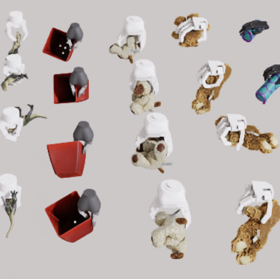
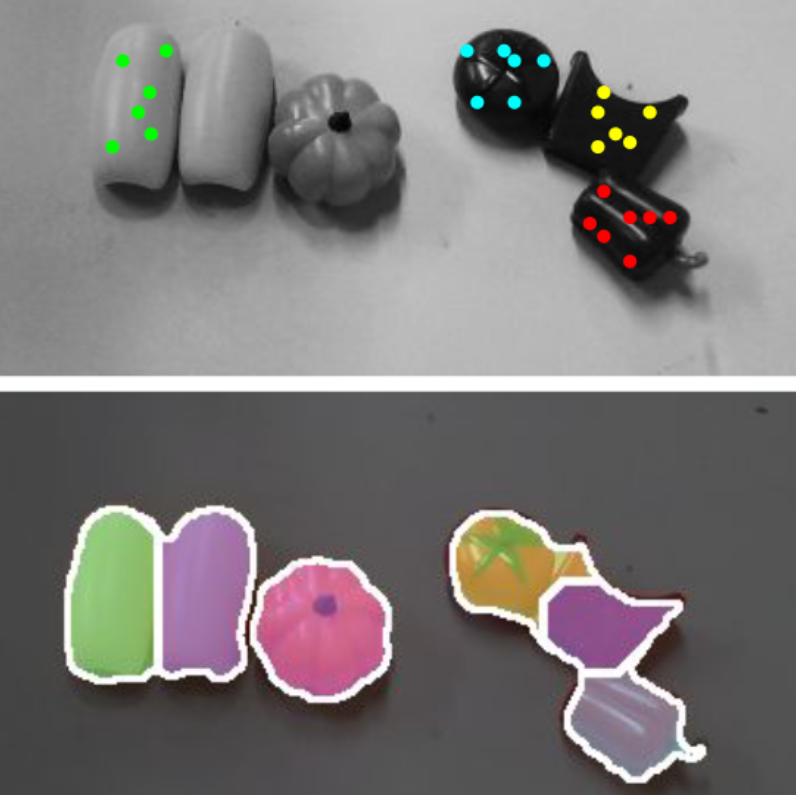
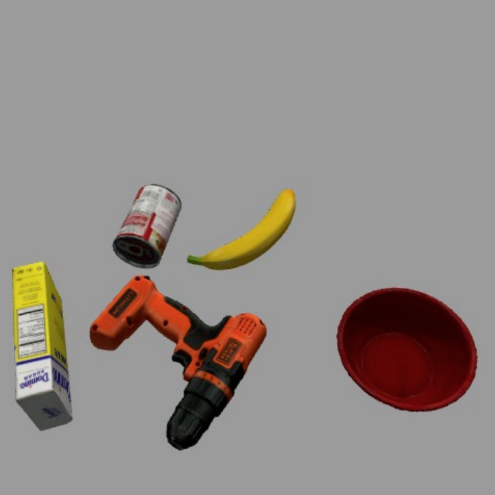
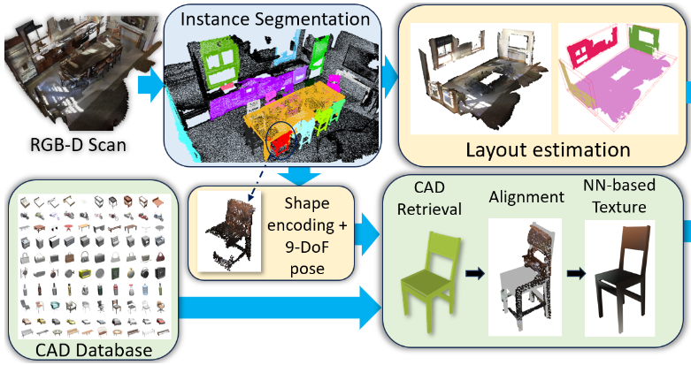
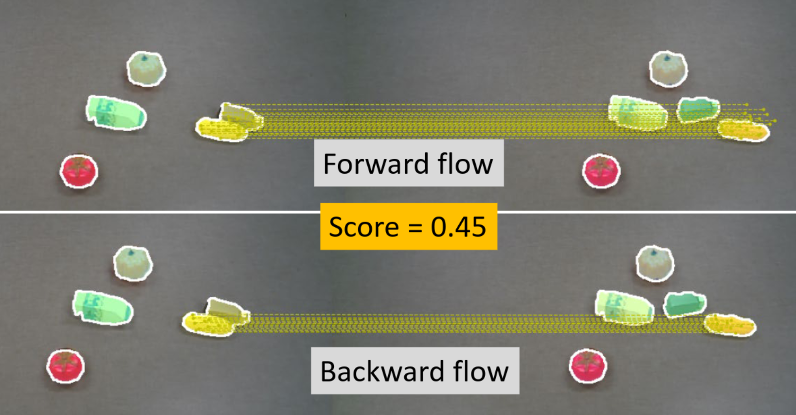
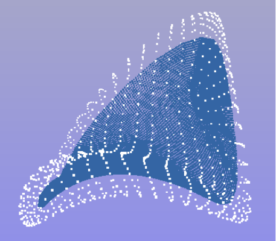
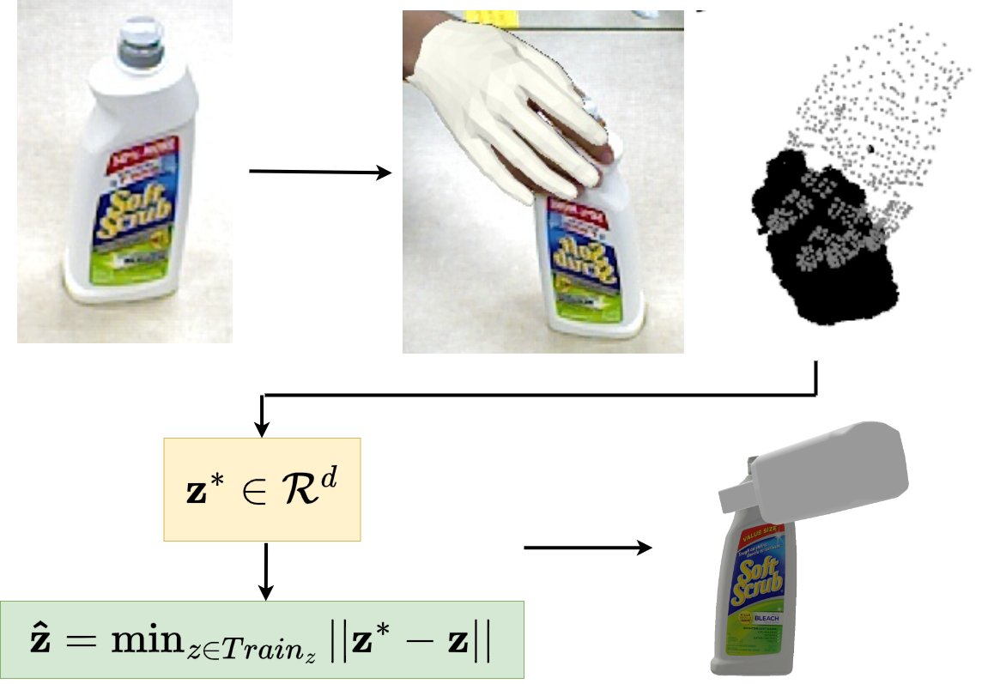
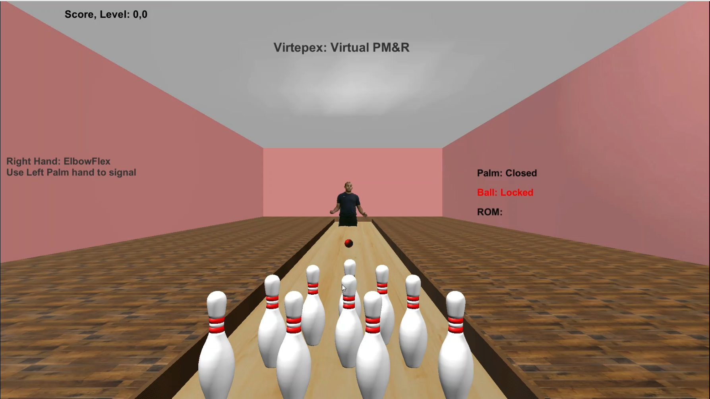

Generalized submodular information measures: Theoretical properties, examples, optimization algorithms, and applications
Generalized submodular information measures: Theoretical properties, examples, optimization algorithms, and applicationsWith R Iyer, J Bilmes, H Asanani
In IEEE Transactions on Information Theory (ISIT) 2021 | DOI Link
My main research focus is on robot manipulation methods, especially robust grasping. I am interested in developing generalizable grasp and manipulation methods which can scale well to unseen objects and gripper morphologies. I am currently trying to develop generative models for fast and accurate grasp synthesis. In addition to this, I am also interested in interactive perception based methods for real world robotics and have a couple of projects relating to real world segmentation. Apart from these, I am excited to learn more about topics like equivariant networks, deformable object modeling, deep generative models and geometry fundamentals!
 MultiGripperGrasp: A Dataset for Robotic Grasping from Parallel Jaw Grippers to Dexterous Hands
With F Casas, B Prabhakaran, Y Xiang
In IEEE International Conference on Intelligent Robots and Systems (IROS) 2024
| Arxiv | Project Page
 RISeg: Robot Interactive Object Segmentation via Body Frame-Invariant Features
With H Qian, Y Lu, K Ren, G Wang, Y Xiang, K Hang
In IEEE International Conference on Robotics and Automation (ICRA) 2024
| Arxiv |
 SceneReplica: Benchmarking Real-World Robot Manipulation by Creating Reproducible Scenes
With S Allu, Y Lu, J Jaykumar, B Prabhakaran, Y Xiang
In IEEE International Conference on Robotics and Automation (ICRA) 2024
| Arxiv | Project Page |
 CIS2VR: CNN-based Indoor Scan to VR Environment Authoring Framework
With H Kumar, B Prabhakaran
In IEEE International Conference on AI & extended and VR (AIxVR) 2024
| DOI Link |
 Self-Supervised Unseen Object Instance Segmentation via Long-Term Robot Interaction
With Z Xu, C Averill, K Palanisamy, K Hang, Y Guo, N Ruozzi, Y Xiang
In Robotics: Science and Systems (RSS) 2023
| Arxiv | Project Page |
 Skeletal Point Representations with Geometric Deep Learning
With B Paniagua, J Vicory
In IEEE International Symposium on Biomedical Imaging (ISBI) 2023 (Oral)
| Arxiv | Code |
 NeuralGrasps: Learning Implicit Representations for Grasps of Multiple Robotic Hands
With N Song, Z Xu, B Prabhakaran, Y Xiang
In Conference on Robot Learning (CoRL) 2022
| Arxiv | Project Page |
 Virtepex: Virtual Remote Tele-Physical Examination System
With K Desai, B Prabhakaran, T Annaswamy
In ACM Designing Interactive Systems Conference (DIS) 2022
| DOI Link |
Generalized submodular information measures: Theoretical properties, examples, optimization algorithms, and applications
With R Iyer, J Bilmes, H Asanani
In IEEE Transactions on Information Theory (ISIT) 2021 | DOI Link
Submodular combinatorial information measures with applications in machine learning
With R Iyer, J Bilmes, H Asanani
In Algorithmic Learning Theory (ALT) 2021
| JMLR Link | Arxiv |
I have served as a paper reviewer for the following: